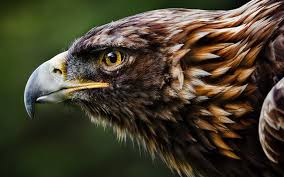

Đại bàng là loài chim ăn thịt cực mạnh được tìm thấy trên khắp hành tinh và một vài cá thể trong số chúng nằm trong danh sách những loài đại bàng lớn nhất thế giới. Có khoảng 60 loài đại bàng đến từ châu Âu, châu Phi và châu Á, trong số chúng có những loài thuộc giống chim ăn thịt cực kì lớn. Để phân biệt được rõ hơn, hãy cùng chúng tôi tìm hiểu về Top 15 loại chim săn mồi lớn nhất thế giới được liệt kê dưới đây và một số loài chim ăn thịt khác bao gồm cả những loại chim nổi tiếng như Chim ưng châu Phi, Đại bàng đốm lớn, Đại bàng ẩn sĩ núi và đại bàng hoàng đế phương Đông.
Còn được gọi là đại bàng đen, đại bàng thầy tu, hay đại bàng Âu Á, đại bàng đầu trọc đôi khi còn được coi là loài chim săn mồi lớn nhất thế giới. Loài chim săn mồi khổng lồ này có thể dài đến hơn 120 cm (47 inch) với sải cánh lên tới 3 m (120 inch) và trọng lượng lên đến 14 kg (31 lb). Thường làm tổ trên những cành cây cao và các vách đá ở xa, loài chim này có thể bay lên cả phía trên của các tầng đối lưu.